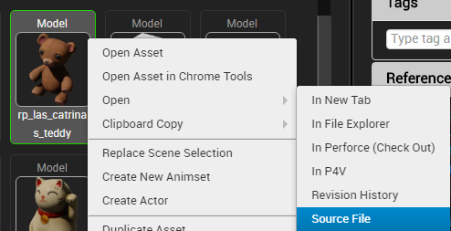
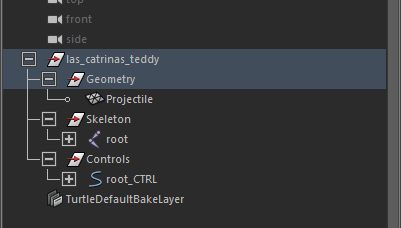
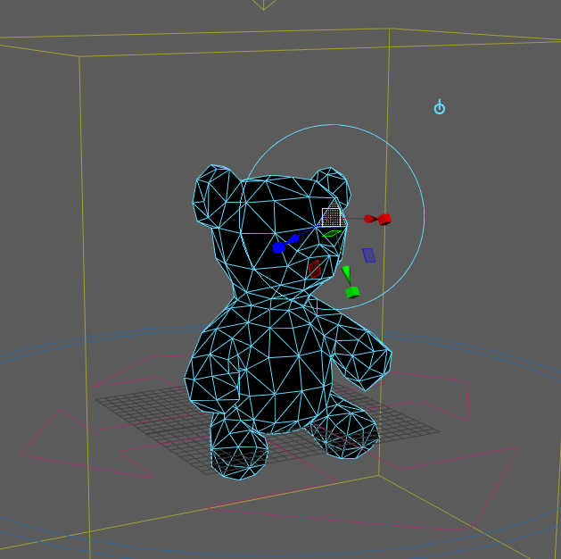
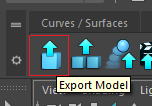
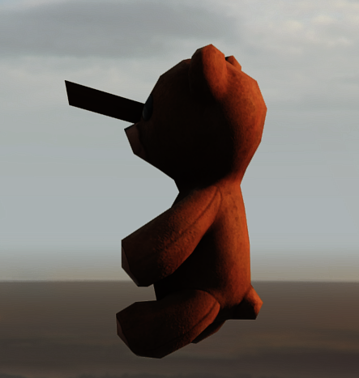

Understanding Maya + Anim + Cine2 in Luna
PART I
Maya is utilized by different artists here at Insomniac ranging from Modelers, Animators, and Cinematic artists alike. The interface and large amount of tools available at a glance can be a bit overwhelming when choosing where to start learning how these pipelines function.
In my first lesson I will show you how-to take a model from our game, open it in Maya, make an edit and see that change in the Tools and game.
Open the Vault
With the Models asset Filter checked off, search for “rp_las_catrinas_teddy”
Right-click on the model itself and select Open -> Source File (model will open in Maya)

When prompted, selected “Yes – checkout” on the Checkout Asset prompt that appears.
Open the Outliner (Windows -> Outliner), ensure that Geometry in selected.

Click on the object via the 3D view and press [CTRL + E], to enable Extrude Mode (which will allow you to shape the model).

Make an edit to the model (via moving the manipulator) and save the model via [CTRL + S]
Click on the Export Model icon in the top left hand corner (blue box with an upwards arrow) to export the edited model back into the Luna Tools.

Navigate to the Vault, search for and open the “rp_las_catrinas_teddy” model.

SUCCESS!! You have now made an edit to a production asset model.
-- Robert Cox (Production Support Technician)